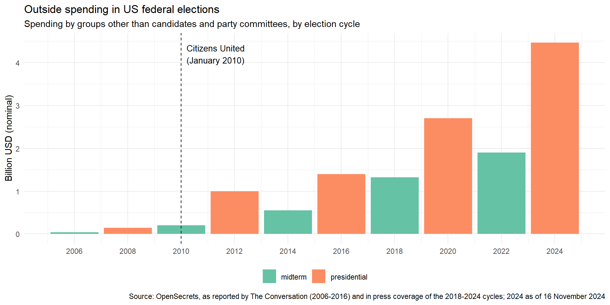
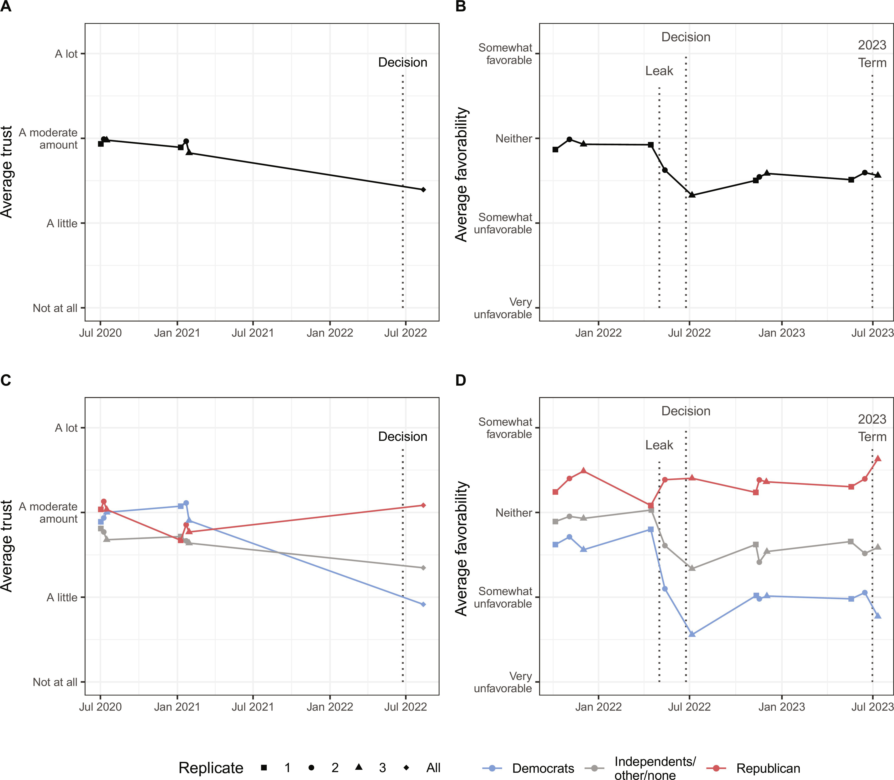

flowchart LR
D[judicial decision] --> Q{contested or<br/>politicized?}
Q -->|no| I1[implementing institutions<br/>civil service, police, agencies]
I1 -->|institutional quality| O1[execution and compliance]
Q -->|yes| I2[implementing institutions]
Q -->|yes| P[political actors<br/>executive, legislature, parties]
Q -->|yes| S[public support]
S -.-> P
I2 --> O2[compliance, evasion,<br/>override or backlash]
P --> O2
S --> O2
The Impact of Judicial Decisions
Week 9
Dr Michal Ovádek
Do court rulings change anything?
courts command neither the sword nor the purse, yet their rulings are treated as changing the world
this week: how decisions get executed, how much of their effect survives the politics, and what they do to behaviour, the economy and public opinion
how would we know that a ruling caused anything?
Two streams
How do decisions turn into outcomes?
two streams through which judicial decisions get executed
the conveyor belt: the relevant bureaucracy (civil service, police, prisons, registries) implements the decision mechanically
execution depends on the quality of implementing institutions: capacity, professionalism, corruption
the same quality determines how much compliance there is
most decisions and most of the impact courts have, but rarely studied
the contested stream: some decisions become contested or politicized
execution still runs through the implementing institutions
but impact now also depends on other political actors (executive, legislature, parties, other courts) and on public support
compliance becomes a choice between implementation, evasion, override and backlash
Two streams of judicial impact
Compliance
Compliance: concept and measurement
compliance: the addressee does what the ruling requires; implementation: the ruling is put into practice by whoever has to; impact: anything changes as a result, intended or not
two types of effects of courts in judicialized political systems: direct effects of litigation and rulings, indirect effects of anticipation and threat
measuring compliance is harder than it looks: rulings differ in what they demand, addressees comply partially or late, and “full compliance” is often a judgment call (Kapiszewski and Taylor 2013)
and compliance is endogenous: courts write the rulings they expect to be obeyed, so observed compliance rates overstate judicial power
How courts secure compliance
vagueness: judges write vaguer opinions where they fear defiance, trading clarity for the appearance of compliance (Staton and Vanberg 2008)
publicity: public hearings and press work raise the cost of ignoring a ruling (Krehbiel 2016)
monitoring: the Costa Rican Supreme Court built a compliance monitoring system with follow-up orders (Gauri, Staton, and Vargas Cullell 2015)
domestic politics, for international courts: new democracies comply faster with the ECtHR (Grewal and Voeten 2015); compliance depends on domestic institutions and coalitions (Hillebrecht 2014); media attention to a ruling predicts whether it is complied with (Reis and Garz 2025); leaders defy the Inter-American Court when their publics oppose the remedy (Parente 2025)
in the conveyor-belt stream compliance depends on the bureaucracy, not on these tools
Judgments waiting to be implemented
at the end of 2024, 3,916 judgments of the ECtHR were pending full implementation, 1,149 of them “leading” cases that require a change in law or practice (Council of Europe annual report, 2024)
894 cases were closed during the year: the stock is not growing, but it is not shrinking fast either
cases against Russia, expelled from the Council of Europe in 2022, make up about 44% of the stock, with more than three billion euros of awards unpaid
the states with the most pending leading cases combine a heavy caseload with slow legislation (Russia, Ukraine, Turkey); Romania is the counter-example of building domestic capacity to implement
implementation of international judgments runs through domestic parliaments, ministries and courts
The hollow hope
The hollow hope debate
the constrained court: courts lack the tools to produce social change; Brown did little for desegregation until Congress and the executive acted a decade later (Rosenberg 2023)
the dynamic court: litigation works indirectly, by legitimizing claims, mobilizing movements and raising rights consciousness (McCann 1992)
the backlash thesis: Brown mattered, but by radicalizing Southern politics and provoking the violence that made civil rights legislation possible (Klarman 1994)
three claims about the same ruling; the disagreement is partly about which outcome counts as impact and over what horizon
Four kinds of impact
| material | symbolic | |
|---|---|---|
| direct | the addressees do what the ruling orders: policy adopted, prisoners released, payments made | the parties and the public come to frame the issue as a matter of rights |
| indirect | actors not addressed change behaviour: agencies, firms, other courts; mobilization is triggered | the wider public debate and the media reframe the problem |
the typology comes from the study of the Colombian Constitutional Court’s 2004 ruling on internally displaced people (T-025), which ordered a national policy and kept jurisdiction to monitor it for years (Rodríguez-Garavito and Rodríguez-Franco 2015)
most impact studies measure the top-left cell; the other three cells are where Rosenberg and McCann disagree
Structural rulings
some rulings order a whole policy rather than a remedy for one claimant
- Colombia’s T-025 on displaced people (2004), Brazil’s declaration of an “unconstitutional state of affairs” in its prisons (2015), South Africa’s order to roll out antiretroviral treatment (2002), India’s right-to-food orders (from 2001)
the court keeps the case open and supervises: follow-up hearings, reporting duties, deadlines
implementation runs through ministries and budgets, so these rulings sit in the contested stream from the start
the evidence on their effects is mixed: large symbolic and indirect effects, slow and partial material ones (Rodríguez-Garavito and Rodríguez-Franco 2015)
The limits of judicialization
judicial empowerment is usually pursued with the hope of increasing government accountability and individual right protection
Botero, Brinks, and Gonzalez-Ocantos (2022) argue that in Latin America, judicialization mostly failed to deliver on these promises due to
weak state capacity limiting the desired positive impact of courts
weak social embeddedness of (liberal) legal structures
the capture of courts by special interests (corruption, nepotism)
What rulings do
What rulings do
| ruling or decision | outcome | finding | source |
|---|---|---|---|
| Dobbs (2022) | births | up about 2.3 percent in states that banned abortion, relative to a synthetic comparison | Dench, Pineda-Torres, and Myers (2024) |
| Dobbs | trust in the Supreme Court | a large fall in legitimacy that lingered at least six months | Gibson (2025) |
| Shelby County (2013) | turnout | fell for Black relative to white registered voters in formerly covered areas | Billings et al. (2024) |
| Citizens United (2010) | elections | Republican candidates gained in states whose spending bans were struck down | Klumpp, Mialon, and Williams (2016) |
| Obergefell (2015) | social norms | perceived norms shifted towards approval, personal attitudes did not | Tankard and Paluck (2017) |
| same-sex marriage legalization | implicit bias | anti-gay bias declined faster after legalization | Ofosu et al. (2019) |
| CJEU Junqueras (2019) | euroscepticism in Spain | rose among those interviewed after the ruling | Turnbull-Dugarte and Devine (2022) |
| a stricter judge | a defendant’s life | prison in Norway cut reoffending; pretrial detention in the US raised convictions and cut employment | Bhuller et al. (2020); Dobbie, Goldin, and Yang (2018) |
Outside spending before and after Citizens United

Citizens United (2010)
January 2010: the Supreme Court held that corporations and unions may spend unlimited sums on independent political advertising; two months later SpeechNow opened the way to super PACs
outside spending by non-party groups went from a few hundred million dollars per cycle to billions; part of the rise is money that would have flowed through other channels anyway, part of it is new
the ruling struck down bans in about half the states, which supplies a comparison: Republican candidates gained in the states that had bans relative to those that did not (Klumpp, Mialon, and Williams 2016)
caveats for the chart: nominal dollars, definitions of outside spending differ between sources, and the 2024 figure covers only part of the cycle
Judges’ decisions and defendants’ lives
the most literal impact of a judicial decision is on the person in the dock
as-if random assignment of judges turns a judge’s leniency into an instrument for what happens next
Norway: incarceration reduced reoffending and raised employment, through training and treatment in prison (Bhuller et al. 2020)
US: pretrial detention raised the probability of conviction and lowered employment years later (Dobbie, Goldin, and Yang 2018)
the same design gives opposite results; what a sentence does depends on what the sentence is
Courts and the economy
in the classic narrative, independent courts constrain the executive’s discretion, including to engage in arbitrary coercive acts, which benefits economic development (North and Weingast 1989)
across a sample of 104 countries, de facto (but not de jure) judicial independence is associated with higher growth rates (Voigt, Gutmann, and Feld 2015)
externally funded judicial reforms in African countries improved perception of the rule of law among relatively powerless groups (Chemin 2021)
court quality has firm-level effects: comprehensive judicial reforms raise the productivity of firms in contract-intensive sectors (Chemin 2020); less congested courts amplified the effect of Brazil’s bankruptcy reform on credit and investment (Ponticelli and Alencar 2016)
these are effects of judicial institutions rather than of particular rulings
Rulings and public opinion
Four public reactions to a ruling
acceptance and legitimation: a trusted court moves opinion towards the policy it upheld (this week’s first reading), helped by legalistic media framing (Linos and Twist 2016); courts may be no better at this than other institutions (Cohen and Powers 2024)
backlash: the ruling moves opinion against it (this week’s Catalan reading); Brown (Klarman 1994); yet opinion backlash is rarer than assumed and gay-rights advances did not provoke it (Bishin et al. 2016)
nothing: Bush v Gore left the Court’s legitimacy intact (Gibson 2024); public mood responds to the Court’s direction thermostatically at best (Ura 2014)
spillover: the ruling changes what people think of the court or the polity rather than of the policy, as after Dobbs (Levendusky et al. 2024; Gibson 2025), Junqueras (Turnbull-Dugarte and Devine 2022) and unpopular UK Supreme Court rulings (Ovádek and Perrett 2026)
legitimation is studied with survey experiments, backlash and spillover with unexpected events, durability with panels
Support for SCOTUS after Dobbs
seemingly even controversial decisions such as Bush v. Gore did not significantly reduce diffuse support for SCOTUS (Gibson 2024)
… that is until Dobbs (Levendusky et al. 2024)
the fall in legitimacy lingered at least six months, though it weakened over time (Gibson 2025)
the incongruity for positivity theory: legitimacy was supposed to be resilient to unpopular rulings
Support for SCOTUS post-Dobbs

Effect of the Dobbs ruling on trust in SCOTUS (Levendusky et al. 2024)
Rulings and attitudes
legalization of same-sex marriage reduced anti-gay bias in the states that legalized it (Kreitzer, Hamilton, and Tolbert 2014; Ofosu et al. 2019)
Obergefell moved what people believed others thought, not what they themselves thought: rulings can shift norms without shifting attitudes (Tankard and Paluck 2017)
the opinion backlash that many predicted after gay-rights advances did not materialize (Bishin et al. 2016)
the durable effects of rulings on attitudes run through norms and behaviour more than through persuasion
Synthetic difference-in-differences
a policy shock hits some units (states that banned abortion after Dobbs) and not others; the untreated units supply the counterfactual
ordinary difference-in-differences assumes the two groups would have moved in parallel; the synthetic version builds a weighted composite of untreated states that matches the treated states before the shock and compares against that
Dench, Pineda-Torres, and Myers (2024): births in ban states rose about 2.3 percent above the synthetic comparison in the first half of 2023, most for women in their early twenties and for Hispanic women
what to check: does the composite track the treated states well before the shock? are there spillovers (travel for abortions) that contaminate the controls? is the window after the shock long enough?
this is the workhorse design for the policy effects of rulings; the unexpected-event design is its cousin for opinion
Four puzzles
births, turnout and campaign spending move after rulings; through which of the two streams?
a ruling confers legitimacy on a policy only if the court is trusted, and politicized rulings are exactly what erodes trust
Brown changed little directly and a great deal indirectly – success or failure for the court?
new democracies comply with Strasbourg faster than old ones
References
Bhuller, Manudeep, Gordon B. Dahl, Katrine V. Løken, and Magne Mogstad. 2020. “Incarceration, Recidivism, and Employment.” Journal of Political Economy 128 (4): 1269–1324. https://doi.org/10.1086/705330.
Billings, Stephen B., Noah Braun, Daniel B. Jones, and Ying Shi. 2024. “Disparate Racial Impacts of Shelby County v. Holder on Voter Turnout.” Journal of Public Economics 230: 105047. https://doi.org/10.1016/j.jpubeco.2023.105047.
Bishin, Benjamin G., Thomas J. Hayes, Matthew B. Incantalupo, and Charles Anthony Smith. 2016. “Opinion Backlash and Public Attitudes: Are Political Advances in Gay Rights Counterproductive?” American Journal of Political Science 60 (3): 625–48. https://doi.org/10.1111/ajps.12181.
Botero, Sandra, Daniel Brinks, and Ezequiel Gonzalez-Ocantos. 2022. The Limits of Judicialization: From Progress to Backlash in Latin America. Cambridge University Press. https://doi.org/10.1017/9781009093859.
Chemin, Matthieu. 2020. “Judicial Efficiency and Firm Productivity: Evidence from a World Database of Judicial Reforms.” The Review of Economics and Statistics 102 (1): 49–64. https://doi.org/10.1162/rest_a_00799.
———. 2021. “Can Judiciaries Constrain Executive Power? Evidence from Judicial Reforms.” Journal of Public Economics 199: 104428. https://doi.org/10.1016/j.jpubeco.2021.104428.
Cohen, Harlan, and Ryan Powers. 2024. “Judicialization and Public Support for Compliance with International Commitments.” International Studies Quarterly 68 (3): sqae078. https://doi.org/10.1093/isq/sqae078.
Dench, Daniel, Mayra Pineda-Torres, and Caitlin Myers. 2024. “The Effects of Post-Dobbs Abortion Bans on Fertility.” Journal of Public Economics 234: 105124. https://doi.org/10.1016/j.jpubeco.2024.105124.
Dobbie, Will, Jacob Goldin, and Crystal S. Yang. 2018. “The Effects of Pre-Trial Detention on Conviction, Future Crime, and Employment: Evidence from Randomly Assigned Judges.” American Economic Review 108 (2): 201–40. https://doi.org/10.1257/aer.20161503.
Gauri, Varun, Jeffrey K. Staton, and Jorge Vargas Cullell. 2015. “The Costa Rican Supreme Court’s Compliance Monitoring System.” The Journal of Politics 77 (3): 774–86. https://doi.org/10.1086/681260.
Gibson, James L. 2024. “Losing Legitimacy: The Challenges of the Dobbs Ruling to Conventional Legitimacy Theory.” American Journal of Political Science 68 (3): 1041–56. https://doi.org/10.1111/ajps.12834.
———. 2025. “Do the Effects of Unpopular Supreme Court Rulings Linger? The Dobbs Decision Rescinding Abortion Rights.” American Political Science Review 119 (1): 500–507. https://doi.org/10.1017/S0003055424000169.
Grewal, Sharanbir, and Erik Voeten. 2015. “Are New Democracies Better Human Rights Compliers?” International Organization 69 (2): 497–518. https://doi.org/10.1017/S0020818314000435.
Hillebrecht, Courtney. 2014. “The Power of Human Rights Tribunals: Compliance with the European Court of Human Rights and Domestic Policy Change.” European Journal of International Relations 20 (4): 1100–1123. https://doi.org/10.1177/1354066113508591.
Kapiszewski, Diana, and Matthew M. Taylor. 2013. “Compliance: Conceptualizing, Measuring, and Explaining Adherence to Judicial Rulings.” Law & Social Inquiry 38 (4): 803–35. https://doi.org/10.1111/j.1747-4469.2012.01320.x.
Klarman, Michael J. 1994. “How Brown Changed Race Relations: The Backlash Thesis.” The Journal of American History 81 (1): 81–118. https://doi.org/10.2307/2080994.
Klumpp, Tilman, Hugo M. Mialon, and Michael A. Williams. 2016. “The Business of American Democracy: Citizens United, Independent Spending, and Elections.” The Journal of Law and Economics 59 (1): 1–43. https://doi.org/10.1086/685691.
Krehbiel, Jay N. 2016. “The Politics of Judicial Procedures: The Role of Public Oral Hearings in the German Constitutional Court.” American Journal of Political Science 60 (4). https://doi.org/10.1111/ajps.12229.
Kreitzer, Rebecca J., Allison J. Hamilton, and Caroline J. Tolbert. 2014. “Does Policy Adoption Change Opinions on Minority Rights? The Effects of Legalizing Same-Sex Marriage.” Political Research Quarterly 67 (4): 795–808. https://doi.org/10.1177/1065912914540483.
Levendusky, Matthew, Shawn PattersonJr, Michele Margolis, Josh Pasek, Kenneth Winneg, and Kathleen H. Jamieson. 2024. “Has the Supreme Court Become Just Another Political Branch? Public Perceptions of Court Approval and Legitimacy in a Post-Dobbs World.” Science Advances. https://doi.org/10.1126/sciadv.adk9590.
Linos, Katerina, and Kimberly Twist. 2016. “The Supreme Court, the Media, and Public Opinion: Comparing Experimental and Observational Methods.” The Journal of Legal Studies 45 (2): 223–54. https://doi.org/10.1086/687365.
McCann, Michael W. 1992. “Reform Litigation on Trial.” Law & Social Inquiry 17 (4): 715–43. https://doi.org/10.1111/j.1747-4469.1992.tb00637.x.
North, Douglass C., and Barry R. Weingast. 1989. “Constitutions and Commitment: The Evolution of Institutions Governing Public Choice in Seventeenth-Century England.” The Journal of Economic History 49 (4): 803–32. https://doi.org/10.1017/s0022050700009451.
Ofosu, Eugene K., Michelle K. Chambers, Jacqueline M. Chen, and Eric Hehman. 2019. “Same-Sex Marriage Legalization Associated with Reduced Implicit and Explicit Antigay Bias.” Proceedings of the National Academy of Sciences 116 (18): 8846–51. https://doi.org/10.1073/pnas.1806000116.
Ovádek, Michal, and Stuart Perrett. 2026. “Contagion or Substitution? Experimental Evidence on Spillovers in Trust Between Legislative and Judicial Institutions.”
Parente, Francesca. 2025. “Domestic Accountability and Non-Compliance with International Law: Evidence from the Inter-American Court of Human Rights.” Journal of Peace Research 62 (1): 119–33. https://doi.org/10.1177/00223433231200924.
Ponticelli, Jacopo, and Leonardo S. Alencar. 2016. “Court Enforcement, Bank Loans, and Firm Investment: Evidence from a Bankruptcy Reform in Brazil.” The Quarterly Journal of Economics 131 (3): 1365–1413. https://doi.org/10.1093/qje/qjw015.
Reis, José M., and Marcel Garz. 2025. “Media Attention and Compliance with the European Court of Human Rights.” Journal of Conflict Resolution 69 (5): 814–38. https://doi.org/10.1177/00220027241269897.
Rodríguez-Garavito, César, and Diana Rodríguez-Franco. 2015. Radical Deprivation on Trial: The Impact of Judicial Activism on Socioeconomic Rights in the Global South. Cambridge University Press. https://doi.org/10.1017/CBO9781139940849.
Rosenberg, Gerald N. 2023. The Hollow Hope: Can Courts Bring about Social Change? 3rd ed. University of Chicago Press. https://doi.org/10.7208/chicago/9780226312507.001.0001.
Staton, Jeffrey K., and Georg Vanberg. 2008. “The Value of Vagueness: Delegation, Defiance, and Judicial Opinions.” American Journal of Political Science 52 (3): 504–19. https://doi.org/10.1111/j.1540-5907.2008.00326.x.
Tankard, Margaret E., and Elizabeth Levy Paluck. 2017. “The Effect of a Supreme Court Decision Regarding Gay Marriage on Social Norms and Personal Attitudes.” Psychological Science 28 (9): 1334–44. https://doi.org/10.1177/0956797617709594.
Turnbull-Dugarte, Stuart J., and Daniel Devine. 2022. “Can EU Judicial Intervention Increase Polity Scepticism? Quasi-Experimental Evidence from Spain.” Journal of European Public Policy 29 (6): 865–90. https://doi.org/10.1080/13501763.2021.1901963.
Ura, Joseph Daniel. 2014. “Backlash and Legitimation: Macro Political Responses to Supreme Court Decisions.” American Journal of Political Science 58 (1): 110–26. https://doi.org/10.1111/ajps.12048.
Voigt, Stefan, Jerg Gutmann, and Lars P. Feld. 2015. “Economic Growth and Judicial Independence, a Dozen Years on: Cross-Country Evidence Using an Updated Set of Indicators.” European Journal of Political Economy 38: 197–211. https://doi.org/10.1016/j.ejpoleco.2015.01.004.

POLS0113: Judicial Politics